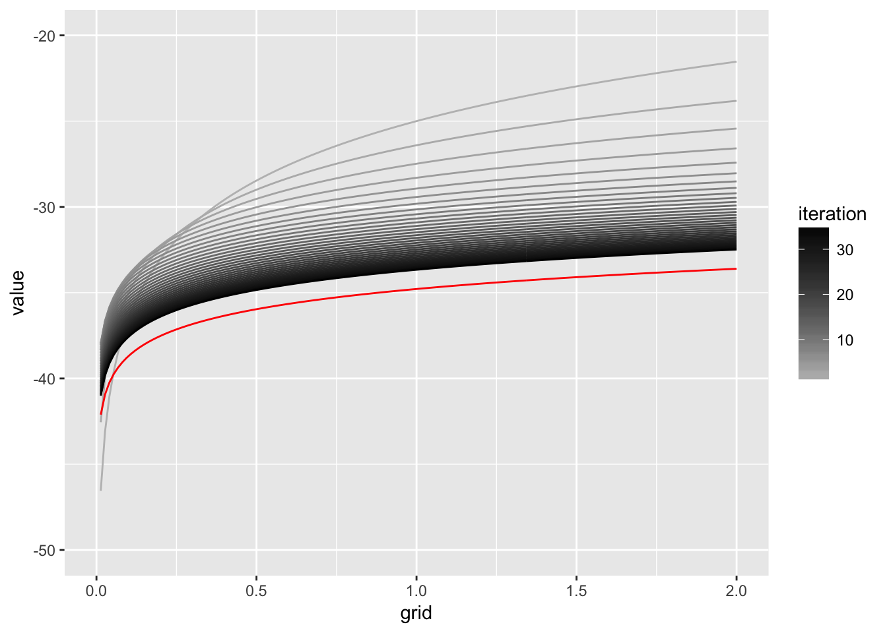

Value Function Iteration Example
Deterministic Growth Model Dynamic Program
(This is my version of the example at Sargent and Stachurski’s quant-econ website. Please observe the license file at the root of that repository.)
In this notebook we’ll implement the deterministic growth model as a dynamic programming problem. We will assume log utility to get a closed form solution. Remember that the problem is defined as \[\begin{align} V(k) &= \max_{0<k'<f(k)} \ln(f(k) - k') + \beta V(k')\\ f(k) & = k^\alpha\\ k_0 & \text{ given} \end{align}\]
Representing a function on \(\mathbb{R}\) in a computer
- The first thing to realise is that we cannot represent \(V(k),k\in \mathbb{R}\) on a computer. However, we can get an arbitrarily good approximation to \(\mathbb{R}\).
- We will approximate \(k\) at a finite number of points \(K={k_1,\dots,k_n}\), called a grid.
- In other words, we will compute \(V(k)\) above only at the list of points in \(K\).
- There is a slight complication that arises from the \(\max\) operator:
- Ideally, we would like to choose \(c\) out of the continuous interval \([0,f(k)]\), and not be restricted to the grid \(K\).
- In order to achieve this, we must find a way to represent \(V(k)\) for values off the grid.
- In other words, we will know a list of values \(V(k_1),\dots,V(k_n)\), but will most of the time need a value \(V(x),x\in (k_i,k_{i+1})\) when we perform the operation \(\max_{0<k'<f(k)}\).
- We will linearly interpolate such a value \(x\), which is similar to connecting the dots.
Fire up R
alpha = 0.65
beta = 0.95
grid_max = 2 # upper bound of capital grid
n = 150
kgrid = seq(from=1e-6,to=grid_max,len=n) # equispaced grid
f <- function(x,alpha){x^alpha} # defines the production function f(k)Next, because of our log assumption, we know that there is a closed form solution here. It is characterized by 2 constants \(c_1,c_2\). We know the true solution to the value function, denoted \(V^*\):
ab = alpha * beta
c1 = (log(1 - ab) + (log(ab) * ab / (1 - ab))) / (1 - beta)
c2 = alpha / (1 - ab)
v_star <- function(k,c1,c2){c1 + c2 * log(k)} # this defines a function v_starWe will now apply the bellman operator to the functional in the above definition. The operator takes a current guess \(V^i\) and returns the next iterate \(V^{i+1}\). We define the operator as \[\begin{align} T(V)(k) =& \max_{0<k'<f(k)} \ln(f(k) - k') + \beta V(k') \\ V^{i+1}(k) =& \max_{0<k'<f(k)} \ln(f(k) - k') + \beta V^{i}(k') \end{align}\]
bellman_operator <- function(grid, w){
# 1) we need an object that interpolates the current guess in w
Interp = approxfun(grid, w)
# 2) create a vector to hold the result
Tw = rep(0,length(w))
# 3) for all grid points k, do the maximization
for (i in 1:length(grid)){
k = grid[i]
# 4) at each grid point, define an objective function
objective <- function(c){ - log(c) - beta * Interp(f(k,alpha) - c)}
# 5) and find the max of that function.
# find max of ojbective between [0,k^alpha]
res = optimize(objective, lower=1e-6, upper=f(k,alpha))
# 6) save that in the result vector
Tw[i] = - objective(res$minimum)
}
#7) return the next guess
return(Tw)
}Now we can start the value function iteration:
# value function iteration (VFI)
# input: * Integer maxIter: max number of iterations
# output: * matrix Vfuns: each column is an iterate on V
VFI <- function (grid,V0,maxIter){
w = matrix(0,length(grid),maxIter)
w[,1] = V0 # initial condition
# start iteration
for (i in 2:maxIter){
w[ ,i] = bellman_operator(grid, w[ ,i-1])
}
return(w)
}Let’s run this now!
# let's do it!
v0 = 5 * log(kgrid) - 25 #initial condition
V = VFI(kgrid,v0,35)
# plot it
truth = data.frame(grid = kgrid, v=v_star(kgrid,c1,c2),variable = 0)
d = as.data.frame(V)
d$grid = kgrid
library(reshape2)
m = melt(d,id.vars = "grid")
library(ggplot2)
p <- ggplot(m,aes(x=grid,y=value,color=as.integer(variable),group=variable)) +
geom_line() +
scale_y_continuous(limits = c(-50,-20)) +
scale_colour_gradient(name = "iteration", low = "grey", high= "black")
p <- p + geom_line(data=truth,aes(x=grid,y=v,group=variable),color="red")
p## Warning: Removed 35 rows containing missing values (geom_path).## Warning: Removed 1 rows containing missing values (geom_path).
Ok that seems to work. What about a random starting value?
v0 = runif(length(kgrid)) - 25 #initial condition
V = VFI(kgrid,v0,70)
d = as.data.frame(V)
d$grid = kgrid
m = melt(d,id.vars = "grid")
p2 <- ggplot(m,aes(x=grid,y=value,color=as.integer(variable),group=variable)) +
geom_line() +
scale_y_continuous(limits = c(-50,-20)) +
scale_colour_gradient(name = "iteration", low = "grey", high= "black")
p2 + geom_line(data=truth,aes(x=grid,y=v,group=variable),color="red") ## Warning: Removed 66 rows containing missing values (geom_path).## Warning: Removed 1 rows containing missing values (geom_path).
## Warning: Removed 66 rows containing missing values (geom_path).